Santa Marina Water - Clean Service
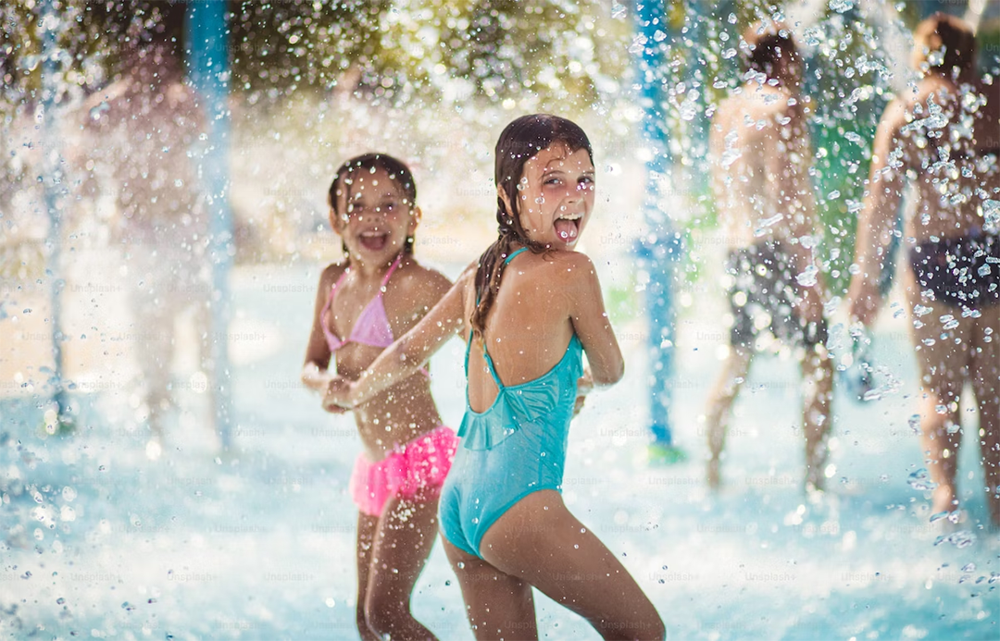
Embarking on this project, the question: How do you brand water? Something commmoditized, something necessary for life? kept bouncing around.
Utilities don’t need branding, because once you’re in, you don’t have much of a choice.
But then I remembered something that Marty Neumier said: A brand is something that people say about you when you’re not in the room.
A brand is a reputation.
If that’s the case, then the project shifts from marketing a product, to marketing the distributor.
Service from the heart (buong puso kaming tutulong)
When everyone sells the same thing, how do you differentiate?
better? —better how?
faster?
cheaper?
If you’re going for the “ERs” what are you really offering?
I say, The ultimate differentiator is service.
Everything is service.

No matter what you sell be it paper, computers, or even planes! at the end of it day, you’re not selling, you're providing a service.
People buy from people.
Every transaction is service. From submitting the proposal, to delivering the product, to fixing the product.
We are all at everyone’s service, no matter how you look at it.
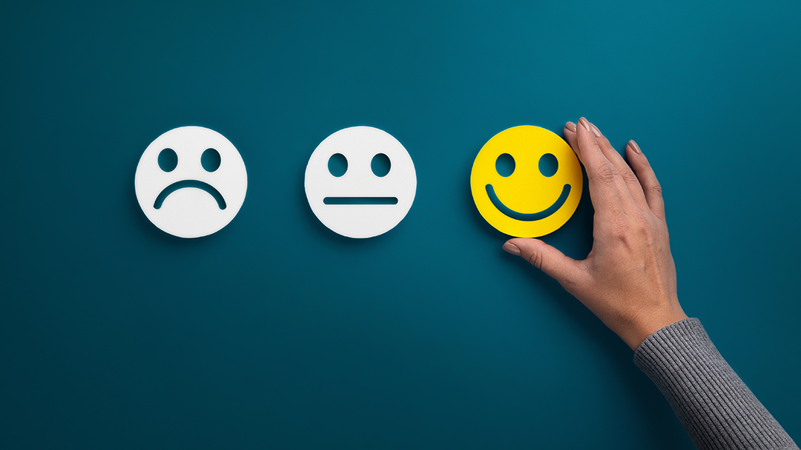
Better service means better reputation and the best brands have the best reputation. The product is a reminder of the service provided. —yes even if it’s a commodity like water.
While water doesn’t need any marketing or branding, the providers do.
I bet I can ask you who the better water providers are and you wouldn’t bat on naming a few.
What makes them different? Is it the water that they provide?
No.
It’s the service that they provide. The better ones are consistent, accommodating and most of all, helpful.
The not-so-better ones? well, you know what they don’t have.
Even if they are providng the same end product, the transaction feels different.
And that’s where Santa Marina Water (SMW) will differentiate.
SMW believes that the only way to create meaningful change is thru clean service.
Clean Service.
What is clean service?
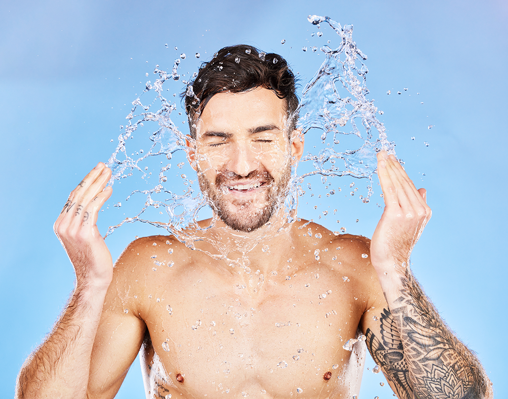
Clean service means your product is of high standard and of best quality, clean service means you hear your customers, you know your customers.
You are your customer.
Empathy, Listening and Conversing with the town, You’re honest, down-to-earth, approachable.
People don’t want to talk to brands, people to talk to people.
SMW is a company that prioritizes empathy, listening and compassion —SMW believes that good service harkens its roots to these 3 traits.
Why you ask?
To build meaningful and deeper relationships you need to listen to the person, empathise with their situation and advise with compassion.
That’s how you deepen bonds.
Because we don’t just focus on providing you with running water, we also want to get to know you.
Santa Marina believes the ways of the past is the way to ensure an abundant future.
Santa Marina has 1 foot in the future but has never forgotten the value of making sure that the traditional way of doing things can be better and durable.
<Show water company branding —stale, uninspired, >
Branding Concept
Listening is a superpower.
When you listen, you learn. you gain insight, you connect.
The visual identity focuses on the core principle: Listenning and making sure that you’re Heard.
We’ve reach the pinnacle of communication. —Today’s technology enables us to disseminate information with the speed of thought. In an instant, we can reach millions, but we can also be reached by millions in turn.
And that can be overwhelming.
How do we handle such an influx of information?
We slow down, we listen, we empathise, we advise.
Listening starts the relationship, Listening builds.
It’s an often over-looked portion of the whole customer’s journey, because it’s easier to ignore and shrug off.
We have time and we’ll make time for you. All the while providing you with the service that you need.
Service is what people remember you by. The product is a souvenir of the service.
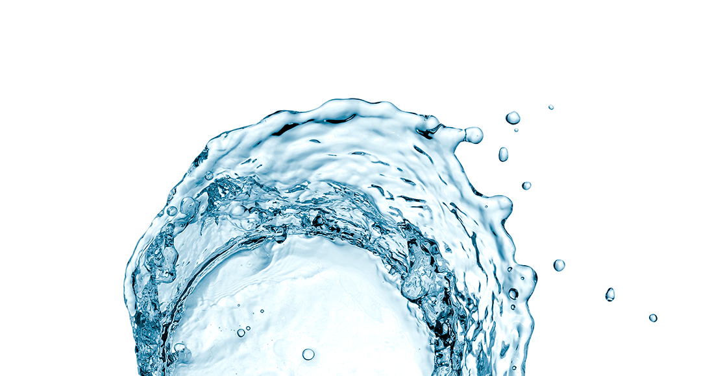
Aiming to make things better.
Santa Marina Water —aims to make things just a little different, just a little better.
We hear you, we care.
The Mark : We hear you, and we care.
The mark is timeless, iconic, distinctive in an unobfuscated, unobtrusive mark, it’s a simple shape made up of even simpler components.
We want our mark to be familiar, simple and recognizable.
The mark is a combination of the following:
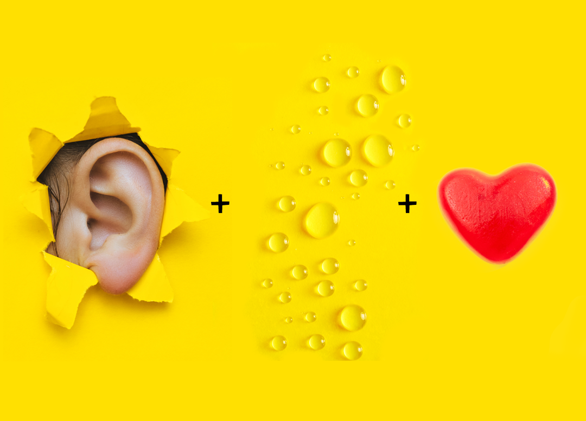
Ears - to listen for empathy
Waterdrops - to remind our customers of the tangible product that we’re providing
heart - because combined it shows the care that we have to our customers that we are always looking out for them.
forming a Heart —symbolising compassion, nourishment and care.
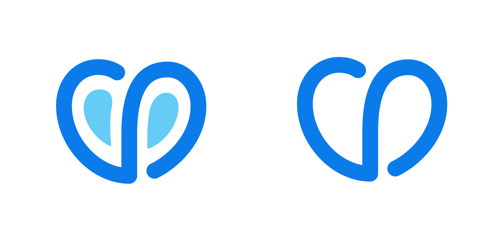
The Typeface : Bouba by HVD
If the mark is how a brand is identified and the typeface is how it’s heard.
Words are percieved differently when set in different typefaces.
Example:
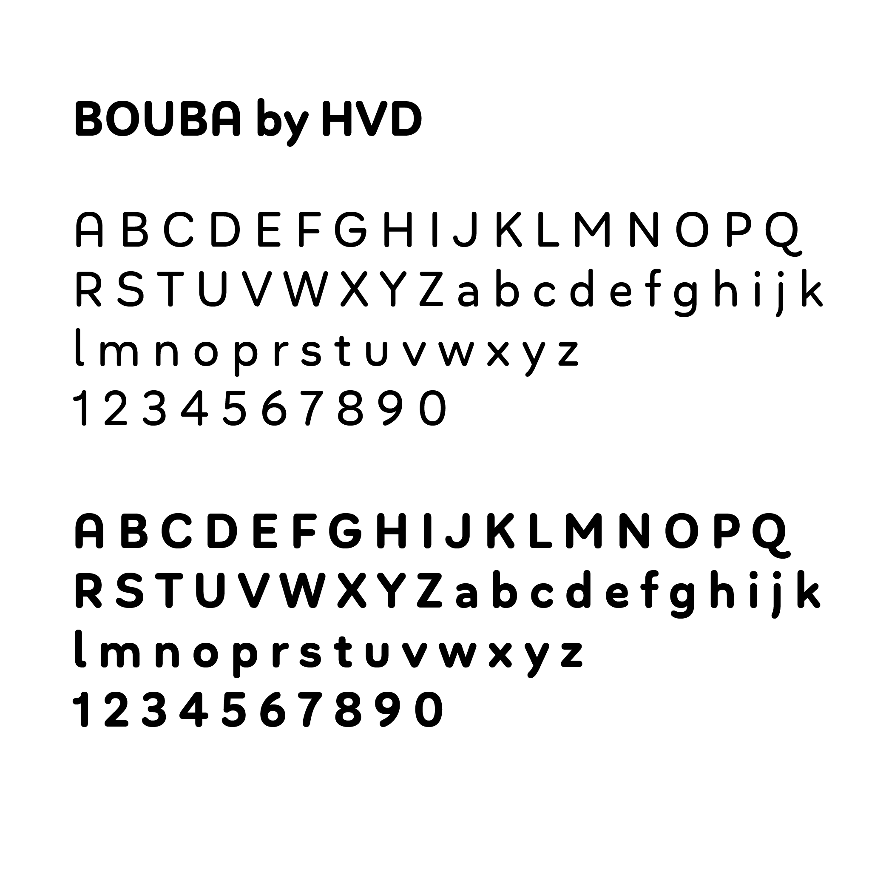
From the HVD Website:
Bouba Round is more than it seems on first sight. It combines the best of two worlds, having an expressive character with its round and friendly shapes and performing great in every typographic aspect. The type family is a true workhorse, ready for serious typography.
We want our voice to be unique and be discernible apart fromt other providers, we want to be distinct but not incomprehensible.
Bouba’s shapes are unique enough but not too different that legibility is sacrificed.
Bouba strikes a great balance of approachable and credibility round edges, and soft curves.
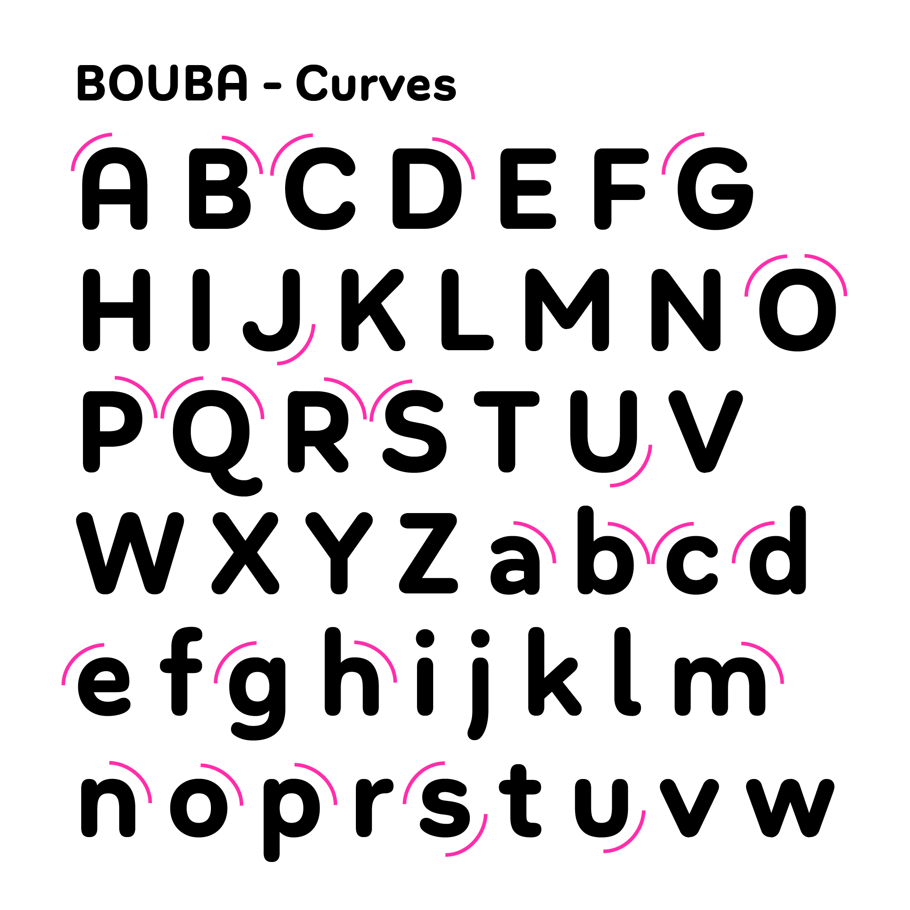
Why Rounded Typeface?
Rectangles with rounded corners are easier on the eyes than a rectangle with sharp edges because they take less cognitive effort to visually process.
Color Palette
If the typography is our voice, then the color palette is the clothing.
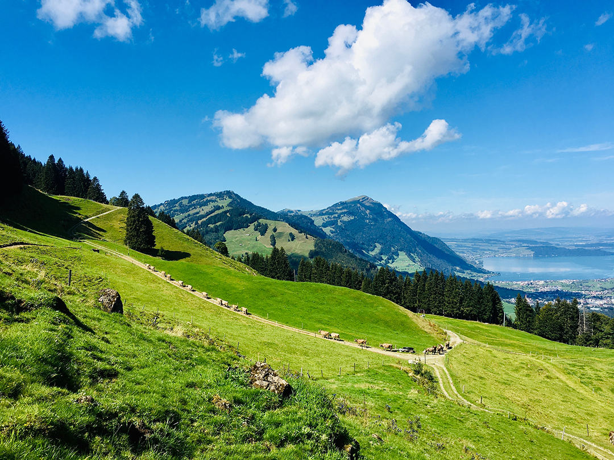
Vibrant, fresh and energetic are themes that were explored when conceptualising the color scheme.
We are striving for a brand that’s captivating but at the same time not overpowering.
Ocean blues, Sky blues plus accents of Lime Green and Flashy Purples give the brand a calm and vibrant vibe. It’s clean, fresh, young —optimistic and full of energy.
Composing the brand logo
The lockup will have both the name and the mark at all times for the timebeing —that is until we are properly introduced to our customers and investors.
Our brand is a symbol that we wear our hearts on our sleeves, and that’s our superpower, we empathise, we’re compassionate and more importantly we care —for you.
The mark is a reminder not just for our customers but also to us that in everything we do, it’s the service that matters.

Mockups
Here are a few samples of how the branding will work in different applications like road signs, billing, uniforms and the water meter:
Shirt Uniforms
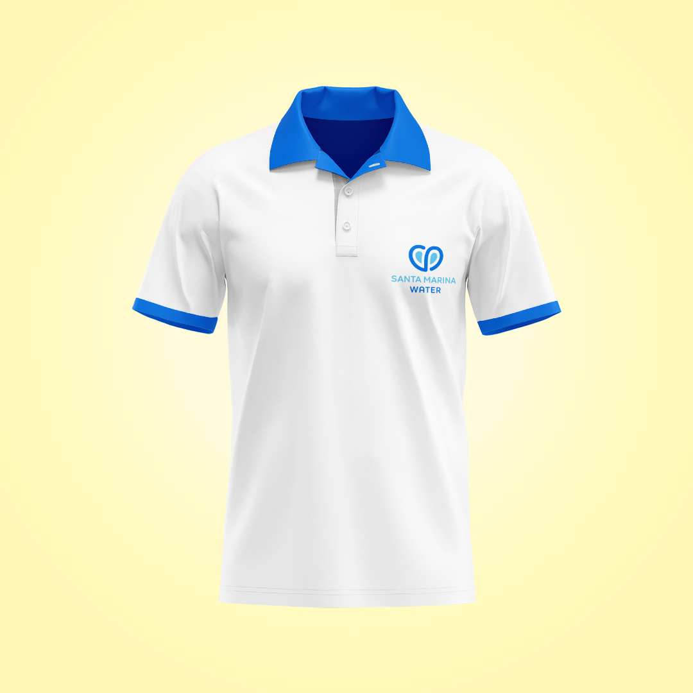
Water Meter
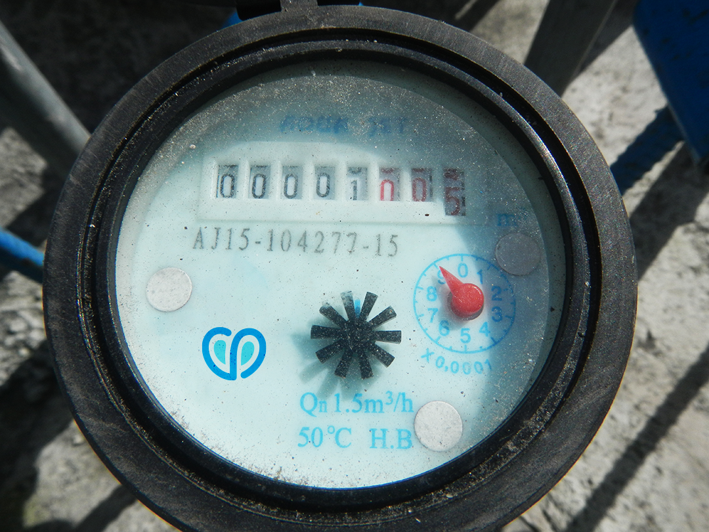
Road Signages

Billing
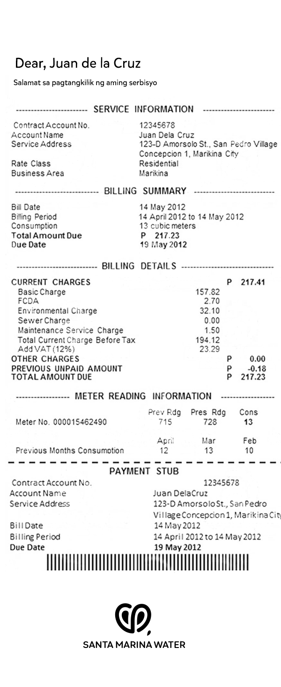